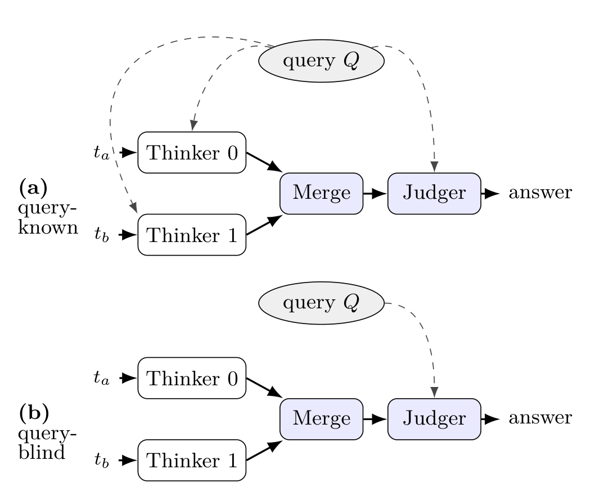

Why it matters왜 중요한가
Latent multi-agent papers have argued about what to send between agents. This one looks at the step everyone skips: how several received caches are glued into one, and what guarantees that glue should give.
잠재 통신 멀티에이전트 논문들은 에이전트 사이에 무엇을 보낼지를 두고 논쟁해 왔다. 이 논문은 모두가 건너뛴 단계를 본다. 받은 캐시 여러 개를 어떻게 하나로 붙이는가, 그리고 그 접합이 어떤 보장을 줘야 하는가.
LatentMAS chains caches in a fixed order, so the question never comes up. Once agents run in parallel on separate pieces of a problem, someone must pick an order. RoPE (rotary position encoding, which bakes each token's position into its key vector) makes that order matter. The first cache keeps its keys exactly as the model computed them. Later caches are rotated to new positions. The authors' setting of interest is federated, "query-blind" inference, where independent data holders encode their fragment without seeing the question and without a coordinator. There, the merge has to give the same result regardless of arrival order and has to tolerate the same fragment arriving twice (gossip, retries). That is exactly what CRDTs guarantee, and Baquero is a co-author of the original CRDT paper (Shapiro et al., 2011). To test the merge in isolation, the paper builds a benchmark where each of two agents sees only half a problem. One half alone scores 2–5%; both halves together score 100%. The merge is therefore on the critical path.
LatentMAS는 캐시를 고정된 순서로 이어 붙이므로 이 문제가 생기지 않는다. 그런데 에이전트들이 문제의 서로 다른 조각을 병렬로 처리하면, 누군가는 순서를 정해야 한다. RoPE(각 토큰의 위치를 key 벡터에 회전으로 새겨 넣는 위치 인코딩) 때문에 그 순서가 결과를 바꾼다. 첫 번째 캐시는 모델이 계산한 key를 그대로 유지한다. 뒤의 캐시들은 새 위치로 회전된다. 저자들이 겨냥하는 상황은 연합(federated)·"질문 비공개(query-blind)" 추론이다. 독립된 데이터 보유자들이 질문을 보지 못한 채, 조정자 없이 자기 조각을 인코딩한다. 이때 병합은 도착 순서와 상관없이 같은 결과를 내야 하고, 같은 조각이 두 번 도착해도(가십 전파, 재전송) 버텨야 한다. 이것이 바로 CRDT가 보장하는 성질이며, Baquero는 CRDT 원 논문(Shapiro et al., 2011)의 공저자다. 병합 자체만 시험하려고, 논문은 두 에이전트가 각각 문제의 절반만 보는 벤치마크를 만든다. 한쪽 절반만으로는 2~5%, 두 절반을 함께 보면 100%다. 그러니 병합이 정답으로 가는 길 한가운데에 놓인다.

By the numbers핵심 숫자
No need to know the best order최적 순서를 몰라도 된다
| Method | q-known @20 | q-known @40 | q-blind @20 | q-blind @40 |
|---|---|---|---|---|
| BagMerge default | 0.89 | 0.85 | 0.90 | 0.85 |
| BagMerge swap | 0.90 | 0.91 | 0.83 | 0.77 |
| CanonicalMerge | 0.93 | 0.94 | 0.86 | 0.85 |
| Δ (CM − best BagMerge) | +0.03 | +0.03 | −0.04 | 0.00 |
| Single agent, both fragments as text | 1.00 (Table 2) | |||
In one diagram한 장의 그림
The idea in four pieces아이디어를 네 조각으로
BagMerge has a privileged slot
Concatenating caches with RoPE re-encoding treats the first cache differently from the rest. Its keys keep the rotation the model was trained on; every later cache is shifted by the length of what precedes it. On the partitioned benchmark, the two orderings of two thinkers differ by about 7 points, and the winner is unstable: swap, default, swap, swap across the four model × regime cells (1.7B and 4B, query-known and query-blind). A deployer could not fix a safe order without testing each setting. Neither Agent Primitives nor LatentMAS measures this.
RoPE 재인코딩으로 캐시를 이어 붙이면 첫 캐시와 나머지를 다르게 다룬다. 첫 캐시의 key는 모델이 학습한 그대로의 회전을 유지하고, 뒤의 캐시는 앞선 길이만큼 위치가 밀린다. 분할 벤치마크에서 두 thinker의 두 순서는 약 7점 차이가 나고, 승자도 불안정하다. 모델 × 상황 네 칸(1.7B·4B, query-known·query-blind)에서 swap, default, swap, swap 순이다. 배포하는 쪽은 설정마다 시험해 보지 않고는 안전한 순서를 정할 수 없다. Agent Primitives도 LatentMAS도 이 효과를 측정하지 않았다.
Let the content pick the slot
For each cache, take the mean key norm over its last positions at one middle layer (layer 15 of 28 on Qwen3-1.7B), sort from high to low, and break ties by hash. The score depends only on the cache itself, so the output cannot depend on input order. The authors read a high norm as "this fragment carries more question-relevant information", so the densest fragment gets the slot the judger reads most reliably, chosen per problem. The layer choice is a broad band, not a knife-edge: layers 12, 15 and 22 give 0.89–0.94 (layer 18 dips to 0.86), while layer 5 gives 0.59 and layer 27 gives 0.84. On the 4B model it had to be re-picked (layer 24).
각 캐시에 대해 중간 층 하나(Qwen3-1.7B의 28층 중 15층)에서 마지막 위치들의 평균 key norm을 구하고, 큰 것부터 정렬하며, 동점이면 해시로 가른다. 점수가 캐시 자신에만 의존하므로 입력 순서가 출력에 영향을 줄 수 없다. 저자들은 norm이 크면 "이 조각이 질문 관련 정보를 더 많이 담았다"고 해석한다. 그래서 정보가 가장 밀집된 조각이 judger가 가장 잘 읽는 자리를 문제마다 차지한다. 층 선택은 뾰족한 최적점이 아니라 넓은 구간이다. 12·15·22층은 0.89~0.94(18층은 0.86으로 잠깐 떨어짐), 5층은 0.59, 27층은 0.84다. 4B 모델에서는 층을 다시 골라야 했다(24층).
A set, rendered late
The durable object is a set of unrotated caches keyed by a hash of all their K and V bytes. Merging two sets is union, which is commutative, associative, and idempotent by definition, making the state a CvRDT (a state-based CRDT whose merge is a least upper bound). Layout happens only at decode time. This is what makes re-delivery safe. The absorption is purely syntactic, though: two caches that say the same thing in different bytes are two elements, and byte equality across parties assumes identical weights and deterministic kernels on the same hardware.
오래 유지되는 객체는 회전하지 않은 캐시들의 집합이며, 각 캐시는 K·V 전체 바이트의 해시로 식별된다. 두 집합의 병합은 합집합이고, 합집합은 정의상 교환·결합·멱등 법칙을 만족한다. 그래서 이 상태는 CvRDT(병합이 최소 상한인 상태 기반 CRDT)다. 배치는 디코딩 시점에만 한다. 재전송이 안전한 이유가 이것이다. 다만 흡수는 순전히 문법적이다. 같은 내용을 다른 바이트로 담은 두 캐시는 별개 원소다. 또한 참여자 간 바이트 일치는 같은 가중치와 같은 하드웨어의 결정적 커널을 전제한다.
Transport is not composition
With three jointly necessary fragments, every cache-only merge collapses. A flat 3-way merge scores 0.07 on chain problems and 0.03 on symmetric-constraint problems. A pairwise merge tree is no better (0.06 / 0.01), and on one family it is worse. Accuracy comes back only when the model reprocesses a seam, meaning one thinker runs on top of another's cache (0.73 with one seam, 0.97 as a full chain on chain problems). The symmetric family stays near the floor even as a full chain (0.17). Logit fusion collapses too, so this is a composition limit, not a cache artifact.
함께 있어야만 풀리는 조각이 셋이 되면, 캐시만으로 하는 병합은 모두 무너진다. 3-방향 평면 병합은 사슬 문제에서 0.07, 대칭 제약 문제에서 0.03이다. 쌍별 병합 트리도 나을 게 없고(0.06 / 0.01), 한 문제군에서는 오히려 더 나쁘다. 정확도는 모델이 이음매를 다시 처리할 때, 즉 한 thinker가 다른 thinker의 캐시 위에서 돌 때만 돌아온다(사슬 문제에서 이음매 1개면 0.73, 완전한 사슬이면 0.97). 대칭 문제군은 완전한 사슬이어도 바닥 근처에 머문다(0.17). logit 융합도 함께 무너지므로, 이것은 캐시 특유의 문제가 아니라 합성 자체의 한계다.
How it works어떻게 작동하나
- Split and think. 나누고 생각한다. Each of two thinkers (same Qwen3 model) gets one fragment, plus the question in the query-known regime. It runs 20 or 40 latent steps, feeding its last hidden state back as input the way Coconut does, and produces no text. Nothing is trained.두 thinker(같은 Qwen3 모델)가 각각 조각 하나를 받는다. query-known 상황이면 질문도 함께 받는다. 마지막 은닉 상태를 다시 입력으로 넣는 Coconut 방식으로 잠재 스텝을 20 또는 40번 돌며, 텍스트는 만들지 않는다. 학습은 전혀 없다.
- Address and ingest. 식별하고 넣는다. Hash every layer's K and V bytes to get the fragment's id, and insert the unrotated cache into the set under that id. A second delivery of the same bytes is absorbed.모든 층의 K·V 바이트를 해시해 조각의 id를 얻고, 회전하지 않은 캐시를 그 id로 집합에 넣는다. 같은 바이트가 다시 오면 흡수된다.
- Render. 렌더한다. Sort the fragments by mean key norm at the routing layer, highest first. Concatenate along the sequence axis. Rotate each later block's keys so its positions continue after the prefix; values pass through unchanged. The cost is O(T·d) per thinker per layer.라우팅 층의 평균 key norm으로 조각을 큰 순서대로 정렬한다. 시퀀스 축으로 이어 붙인다. 뒤쪽 블록의 key를 회전시켜 위치가 앞부분 뒤로 이어지게 하고, value는 그대로 둔다. 비용은 thinker·층마다 O(T·d)다.
- Judge. 판정한다. The judger, the same model with no latent steps of its own, decodes the answer with the merged cache as its prefix.judger는 같은 모델이며 자기 잠재 스텝 없이, 병합된 캐시를 앞부분(prefix)으로 삼아 답을 생성한다.
What to take away그래서, 가져갈 것
If you merge parallel agents' caches by concatenation with RoPE re-encoding, the order is a hidden hyperparameter worth about 7 points, and its best value is not predictable. A content-determined sort removes it at no measured cost. It is a few lines of code.
병렬 에이전트의 캐시를 RoPE 재인코딩과 함께 이어 붙여 병합한다면, 순서는 약 7점짜리 숨은 하이퍼파라미터이고 그 최적값은 미리 알 수 없다. 내용 기반 정렬은 측정된 손실 없이 이 변수를 없앤다. 코드 몇 줄이면 된다.
When the pieces of information are jointly necessary, fusing at the cache level beats fusing at the logits by a wide margin (0.947 vs 0.50). A weighted average of two next-token distributions cannot rebuild a constraint that neither agent could state alone.
정보 조각들이 함께 있어야만 의미가 있을 때, 캐시 단계 융합이 logit 단계 융합보다 크게 앞선다(0.947 대 0.50). 두 다음-토큰 분포의 가중 평균으로는, 어느 에이전트도 혼자서는 말할 수 없는 제약을 다시 만들 수 없다.
Putting caches side by side is not the same as integrating them. At three fragments, merging fails until the model reprocesses one cache on top of another. This fits the causal audits already in this archive (2607.26773, 2608.04893), which question how much reasoning latent channels actually carry.
캐시를 나란히 놓는 것과 통합하는 것은 다르다. 조각이 셋이면, 모델이 한 캐시를 다른 캐시 위에서 다시 처리하기 전까지 병합은 실패한다. 이 아카이브에 이미 있는 인과 감사 논문들(2607.26773, 2608.04893)과 맞아떨어진다. 그 논문들은 잠재 채널이 실제로 얼마나 추론을 실어 나르는지 의심한다.
Deduplicate before you concatenate. Re-delivering each fragment 4 times cut accuracy from 0.93 to 0.45 and quadrupled the cache.
이어 붙이기 전에 중복부터 제거할 것. 조각마다 4번씩 다시 전달하자 정확도는 0.93에서 0.45로 떨어지고 캐시는 4배가 됐다.